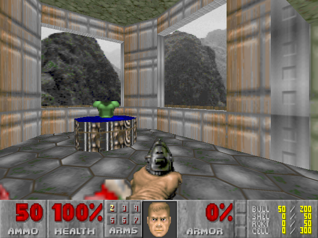
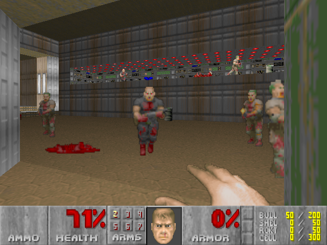

The Original DOOM |
||
|  |  |
 |
The Original Trip to the Unkown |
||
Doom (typeset as DOOM in official documents) is a 1993 science fiction horror-themed first-person shooter (FPS) video game by id Software. It is considered one of the most significant and influential titles in video game history, for having pioneered the now-ubiquitous first-person shooter. The original game was divided into three nine-level episodes and was distributed via shareware and mail order. The Ultimate Doom, an updated release of the original game featuring a fourth episode, was released in 1995 and sold at retail. In Doom, players assume the role of an unnamed space marine, who became popularly known as "Doomguy", fighting his way through hordes of invading demons from Hell. With one third of the game, nine levels, distributed as shareware, Doom was played by an estimated 15–20 million people within two years of its release, popularizing the mode of gameplay and spawning a gaming subculture. In addition to popularizing the FPS genre, it pioneered immersive 3D graphics, networked multiplayer gaming, and support for customized additions and modifications via packaged files in a data archive known as "WADs". As a sign of its effect on the industry, first-person shooter games from the genre's boom in the 1990s, helped in no small part by the game's release, became known simply as "Doom clones". Its graphic violence, as well as satanic imagery, made Doom the subject of considerable controversy.
|
||